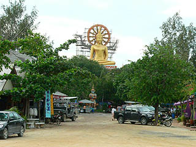
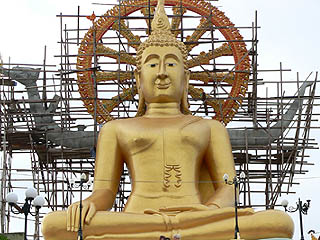
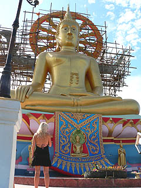
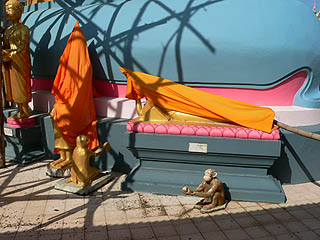
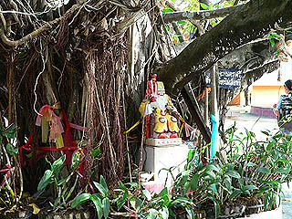

ワット プラ
ヤイ/サムイ島,スラターニー県
WatPhraYai/KoSamui,SuratThani
泰国珍寺武者修業、お次は南部のコサムイという島に拠点を移す。
御存じの方も多かろうがタイ有数のリゾート地である。
海岸沿いにはリゾートホテルや土産屋、レストランなどが並び、道行く観光客はほとんどヨーロピアン。
・・・なんか増々修業という名目から離れていってる気がするんですけど・・・
しかし！
この島に来たのはリゾートを満喫するためではない！あくまでも1に修業、2に修業。3、4がなくて5に修業！なのである。
まずは心身の鍛練のために体力づくり！
・・・というわけでビーチで泳いで来ますわ。で、それ終わったらメシ食ってマッサージに行ってきま〜す。
さて、準備運動も済んだ事だし、そろそろ本格的に修業に入りますか。
まずは大仏で有名な寺、ワットプラヤイに御挨拶。
ここの大仏は多くの猛者が揃うタイでも最も有名な大仏ではなかろうか。
例えば検索サイトで「big
buddha」でサーチするとここの大仏と香港の寶蓮寺の大仏関連のサイトがずらずら〜っと出てくる。
何故ならこの大仏の近くにあるビーチがビッグブッダビーチ、という嬉しいんだか嬉しくないんだか分からない名前なのである。
そんなこんなでもしかしたら「世界一有名な大仏」かもしれない大仏さんに向かう。
ワットプラヤイは島から少し離れた小島にあるが、道路があって丁度江ノ島のようにつながっている。
島の入口の山門を潜るとそこは島に向かって一直線に続く海中道路。
陸地に対して斜めに道が走っているので左側は眺めがいいが、実は右側は淀んでて凄く汚かったです。
海中道路を渡り切ると駐車場アンドやる気満々の土産屋。
その奥の小高い丘の上に大仏さんが鎮座している。

駐車場を挟んで大仏さんと逆サイドの海岸に何やら怪しげなコンクリ像が並んでいる。
勿論観光客は白人さんばっかり。さすが知名度世界一（かもしれない）大仏だ。
君達、おっぱい丸出しのヒゲオヤジを見て何を会得するのだ・・・いや、私もコレ見て何も会得できないっすけどね。
こっちサイドがいわゆる淀んでる方。
ちなみに後の家が建っているのはコサムイの本島。すぐ近くなのである。
本島の陸地から幾らも離れていないのになぜ最短距離をとらずにあんなに長い距離の海中道路を造ったのかは謎だ。
昔は木の橋が架かっていたが台風で壊れてしまったそうなので、もしかしたら潮の流れとか関係してるんでしょうか。
淀んだ海をバックに必死に何かを表現していると思われるコンクリ像たち。
観光スポット不毛の地コサムイにあって数少ない観光地だけにペンキの塗り直しはきちんとされていました。
海沿いだけでなく土産屋の片隅などにもコンクリ像がいて油断ならない。
観光客の目の届かないようなトコロにいるコンクリ像はやっぱりペンキの塗り直しがされてない。ああ世知辛いですなあ〜。
で、ようやく大仏さんに向かう。
高さ15メートル。1972年に出来た、知名度世界一（かもしれない）大仏さんである。

現在大仏さんは光背を建設中。かなり立派な大仏にアップグレードされることであろう。
繰り返すようだが、この島は白人天国。訪れる人もほとんど白人さんである。
従ってバンコクあたりの立派なお寺ではノースリーブ、短パン禁止などとなっているが、コサムイに関してはノースリーブ、短パン当たり前、中には半裸の人までいる始末。知名度世界一（くどいすか）大仏さんも心なしか困っている御様子。
一応貸しシャツもあるのだが誰も使っていない。有料ですからね。

大仏さんの台座の周辺には仏像が並んでいた。中には修復中なのか日除けなのか布を被せられているものもあった。
あ、サルもコンクリです。

高台に建つ大仏さんだけに周辺の眺めは最高である。
大仏の下には瞑想センターのような建物があり、その他諸々の参拝コーナーがある。
勿論守り本尊参拝アンド占いコーナーも完備。
お堂には幾つかの仏像が祭られていた。
右下に鹿の像が見えるが、この小島の守護神は鹿だという。
ちなみに島の名前はコパン。「コ」は島の意味で「パン」は鹿の意味だと言う。つまり鹿島。
むかしむかし猟師が鹿を見つけて追い詰めたが、鹿がこの島に泳いで渡ったので猟師も追い掛けてみると鹿は忽然と消えていた、という伝説があった。
そこから島の守護神が鹿になったようだ。
ついでにこの寺が出来る前、20世紀始め頃迄、この島は火葬場だったそうです。
ま、こう言っては身もフタもないが、来る方も受け入れる方も何となく「観光地だから仕方ないか」っぽい雰囲気だった。
大仏さん、ここ十数年で急激に観光化した島を見て何思う。
そんな中にも寺の一画にあった巨木には土地神らしき神像が祭られており、地元の人達の信仰をアピールしていた。

・・・あ、でも細かいところまで英語で説明があったので勉強にはなりました。
次の修行場へ
泰国珍寺武者修行
珍寺大道場 HOME